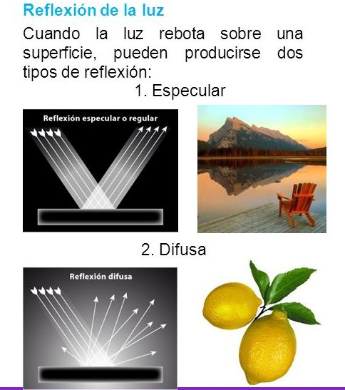

Reflexion especular
Reflexión Especular
- Es propia de superficies brillantes, pulidas, y responsable de los brillos que suelen observarse.
- El color del brillo suele ser diferente del color de la superficie y muy parecido al color de la fuente de luz.
- Phong propone que la luz que llega al observador dependa ´unicamente del ´angulo Φ entre el vector de reflexi´on perfecta R y el vector direcci´on del observador V.
- Si R y V son vectores unitarios, ks , 0 ≤ ks ≤ 1, representa la parte de luz especular reflejada por la superficie y α modela el brillo caracterıstico del material de la superficie.
